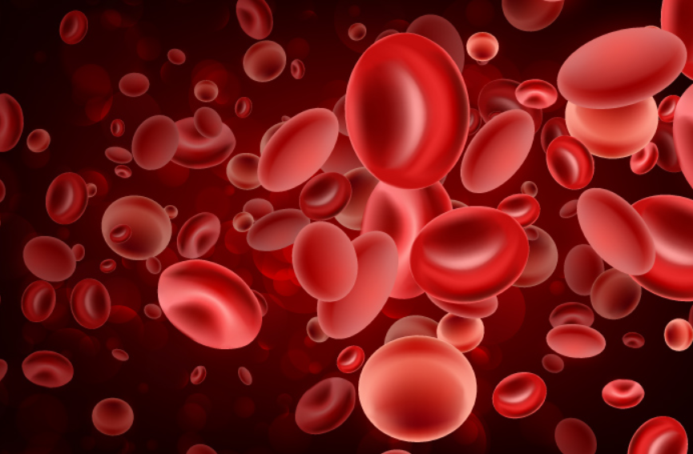

TUJUAN PEMBELAJARAN
APRESEPSI
Pernahkah anda memperhatikan warna darah? Darah yang banyak mengandung oksigen berwarna merah cerah, sedangkan darah yang kekurangan oksigen berwarna lebih gelap.

Sumber: https://www.belajarsampaimati.com/2019/11/mengapa-darah-manusia-berwarna-merah.html
Di dalam tubuh terjadi reaksi kesetimbangan antara hemoglobin (Hb) dan oksigen (O₂):
Hb + O₂ ⇌ HbO₂
Ketika kadar oksigen dalam tubuh meningkat, reaksi akan membentuk lebih banyak HbO₂. Sebaliknya, ketika kadar oksigen menurun, reaksi akan bergeser untuk melepaskan oksigen kembali.
Hal ini menunjukkan bahwa jika kondisi suatu sistem berubah, maka sistem akan menyesuaikan diri untuk mencapai keseimbangan kembali.
Pada pembelajaran ini, anda akan mempelajari faktor-faktor yang memengaruhi kesetimbangan kimia serta cara memprediksi arah pergeseran kesetimbangan berdasarkan prinsip Le Chatelier.